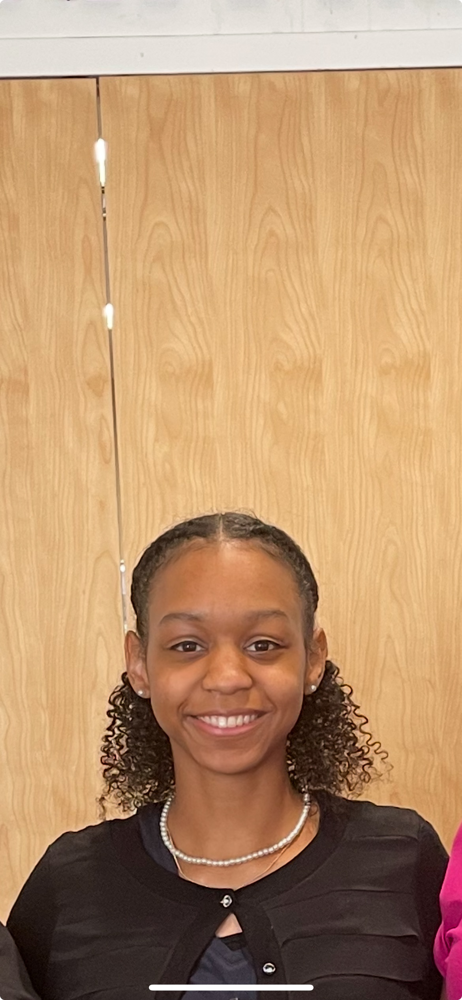

Portfolio Website
A personal portfolio created using HTML to showcase my skills, interests, and projects.
This is a website that showcases things about me!
My name is Madison Byrd, and I'm a computer science major and Art studio minor. I'm interested in the computer science field and graphic design. Additionally, some fun facts about me are I like to draw, and I have a pet dog.

A personal portfolio created using HTML to showcase my skills, interests, and projects.
This is a programming project using the language C to traverse directories and process files based on command-line options.
Technologies: C, Linux, Makefile
View ProjectI developed a C program that reads commands from an input file and executes them using child processes. The program uses fork(),execvp(), and waitpid() for process creation and execution. It also reads command start and end times and generates an execution log using file I/O.
Technologies: C, Linux
View ProjectWant to contact me? Fill out this form!